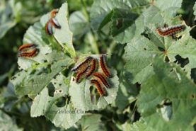
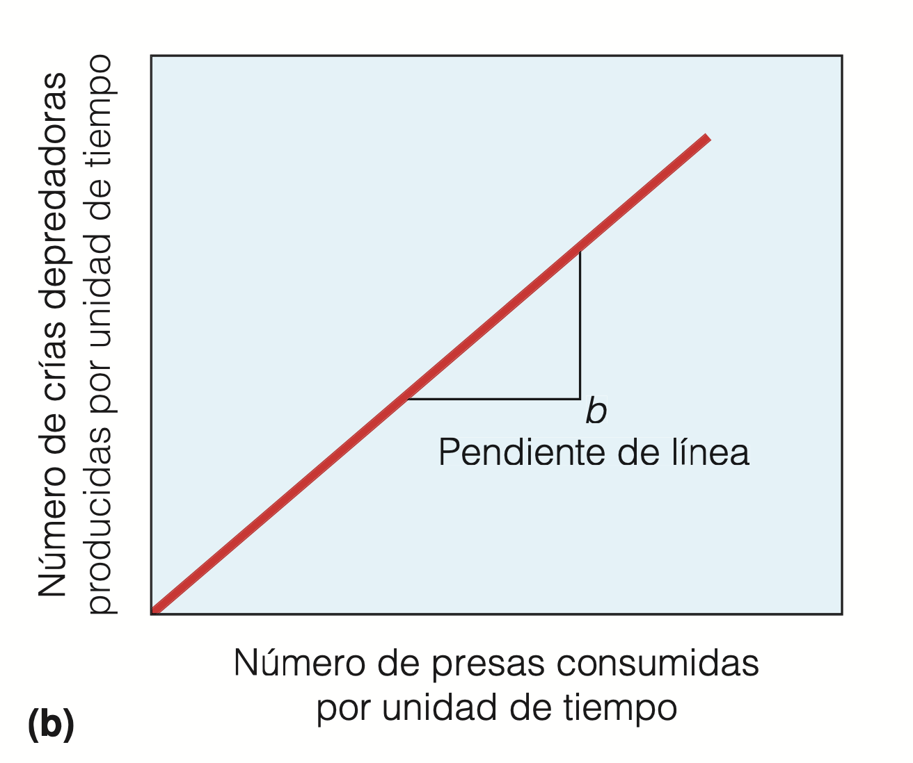
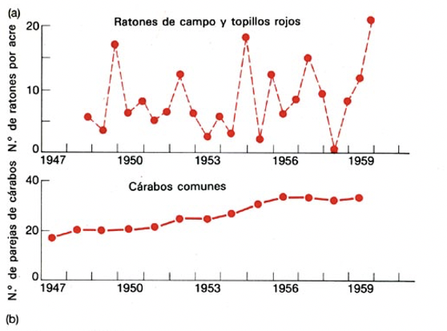

- Depredación
- Definición
- Basada en el ciclo de la materia: interacción en la que un organismo (depredador) captura y consume parcial o totalmente a otro organismo de una especie diferente (presa). La presa ha de estar viva (para diferenciarlo de lo que hacen los carroñeros)
- Basada en el flujo de energía: Mecanismo mediante el cual la energía solar pasa de los productores al resto de seres vivos del planeta.
- Esta relación interespecífica da pie a otros conceptos muy útiles
- Cadena trófica
- Red trófica
- Clasificación de depredadores
- Por tipo de presa consumida
- 
- Por cómo depredan
- Taxonómica
- Hay depredación en TODAS las categorías taxonómicas.
- Modelización matemática de la depredación. Lotka y Volterra (otra vez)
- Asunciones
- No hay migración
- Todos los individuos de la misma especie son iguales.
- El crecimiento de la presa está limitado solo por la depredación (no competencia intraespecífica)
- El depredador es hiperespecialista. Muere sin su presa.
- Un único depredador puede comer todas las presas.
- El medio es homogéneo y estable
- Se basa en
- La ecuación de crecimiento exponencial (en ausencia de competencia)
- dN/dt = rN
- Un factor de mortalidad que representa la eliminación de la presa por parte del depredador.
- El ritmo al que los depredadores consumen a su presa aumenta linealmente con el número de presas.
- Esta relación entre la densidad de la presa y la cantidad de presas consumidas se denomina "respuesta funcional"
- Tipos
- Se representa como c*Npresa (tasa de consumo per capita)
- c = eficiencia de la depredación (pendiente de la recta anterior)
- Npresa = número de individuos de presa
- Así pues, la tasa total de depredación (Nº de presas capturadas por unidad de tiempo) = c*Npresa * Ndepredador (tasa de consumo per capita por número de depredadores)
- Un factor de aumento de la natalidad de los depredadores que representa cómo las presas afectan a su dinámica poblacional.
- El número de crías depredadoras producidas se estima asumiendo que depende linealmente de la cantidad de presa consumida.
- 
- Se representa como b*Npresa * Ndepredador (tasa de consumo per capita * número de depredadores
- La pendiente de esta reta (b) es la eficacia con la cual el alimento se convierte en crecimiento de la población de depredadores.
- Es en este término en el que se explicita la transferencia de energía y de materia entre presas y depredadores
- La tasa a la que las presas son consumidas es igual a la tasa a la que crece el tamaño de la población de depredador.
- Formulación matemática
- Dinamica de las presas
- Dinámica de los depredadores
- Cada ecuación funciona como regulador dependiente de la densidad de la otra.
- Los depredadores inciden en la tasa de mortalidad de las presas. A más depredadores -> menos presas (retroalimentación negativa)
- Las presas inciden en la tasa de natalidad de los depredadores. A más presas -> más depredadores (retroalimentación positiva)
- Isoclinas y gráficos de fase
- ¿Se cumple en la naturaleza?
- Experimentos de laboratorio (efecto de la heterogeneidad ambiental)
- Eotetranychus sexmaculatus (presa) vs Typhlodromus occidentalis (depredador)
- La presa es una plaga de los naranjos.
- Solo presa
- Presa + depredador en un ambiente homogeneo (solo naranjas)
- Presa + depredador en un ambiente heterogéneo (naranjas + bolas de caucho)
- Estudios en la naturaleza
- Depredadores que no se ven afectados por los cambios en las presas.
- 
- Presas que no se ven afectados por su depredador
- Acoplamiento entre poblaciones de presa y depredador.
- Aspectos evolutivos: coevolución depredador-presa
- La "carrera" por sobrevivir a los depredadores se solapa con otra para cazar más presas.
- El proceso de coevolución genera multitud de situaciones
- Mecanismos de defensa
- Mecánicas (espinas, caparazones, etc.)
- Químicas: sustancias químicas para no ser apetecibles a los depredadores, venenos, etc.
- Diseños defensivos
- Cripsis
- Aposemitismo. Coloración de advertencia porque son tóxicos.
- Mimetismo batesiano. Especies inofensivas que imitan el diseño de otras tóxicas
- Diseños disruptivos
- Comportamiento
- Huída
- Asociación con otras especies (ej. hormigas-acacia)
- Gregarismo (herbívoros que levantan la cola o huyen cuando ven al depredador)